EKS + ArgoCD + Multi-Environments and Multi-clusters Gitops
- Create a voting app
- Automate docker image build on ECR after each push using Github Actions workflows
- Automatic management of feature branches in specific dynamically created repositories
- Infrastructure management with Terraform from a dedicated git repository
- Creation of 2 EKS clusters for a staging environment and another for production
- Installation of ArgoCD in the staging cluster. Management of the production cluster from this instance
- Creation of 2 ArgoCD applications. One per environment
- Managing GitOps deployments using separate repositories
- Quick synchronization of ArgoCD applications from a Github Action workflow
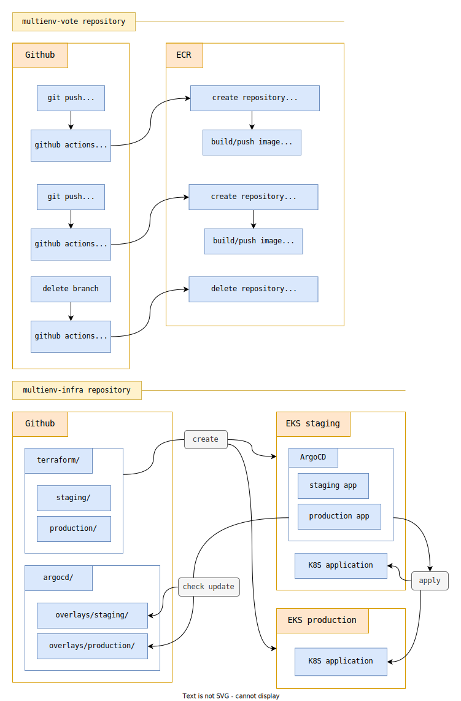
The project
The project is composed of 2 git repositories that you can fork :
- The voting application (a website in Node)
- The infrastructure (driven by Terraform and ArgoCD)
The voting app
You can launch the voting application via this command :
# run vote website using npm - dev mode (livereload + nodemon)
$ make vote
This command executes this script
The site is available at http://localhost:4000/
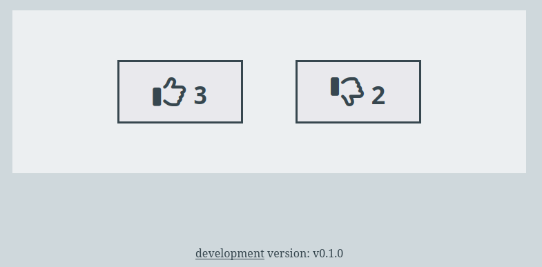
The site is in static version. It is not linked to a database
The returned vote values are random
function randInt(min, max) {
return Math.floor(Math.random() * (max - min + 1)) + min
}
// ...
app.get('/vote', async (req, res) => {
let up = randInt(1, 9)
let down = randInt(1, 9)
return res.send({ up, down })
})
Continuous containerization of the voting application
Containerization is managed by 3 Github Actions workflows
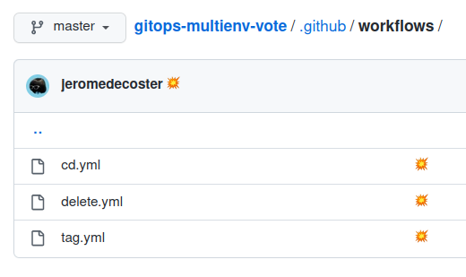
The tag.yml workflow is triggered only when a tag using semver notation is pushed :
name: tag
on:
push:
tags: [ "v*.*.*" ]
# ...
jobs:
build:
runs-on: ubuntu-latest
if: github.ref_type == 'tag'
In this specific case, the docker image is built and pushed to the ECR repository named multienv-vote :
The pushed image will have as tag a value similar to v1.0.0
env:
ECR_REPOSITORY: multienv-vote
# ...
run: |
cd vote
docker image build \
--build-arg NODE_ENV=production \
--build-arg VERSION=${{ github.ref_name }} \
--tag ${{ env.ECR_REGISTRY }}/${{ env.ECR_REPOSITORY }}:${{ github.ref_name }} \
--tag ${{ env.ECR_REGISTRY }}/${{ env.ECR_REPOSITORY }}:latest \
.
docker push --all-tags ${{ env.ECR_REGISTRY }}/${{ env.ECR_REPOSITORY }}
The cd.yml workflow is triggered only when a commit is pushed to a feature branch :
on:
push:
branches-ignore:
- master
pull_request:
branches-ignore:
- master
In this specific case, the docker image is built and pushed to a dynamically created ECR repository named multienv-vote-${ feature-branch-name } :
The pushed image will be tagged with the first 8 characters of the commit sha. A value similar to 23e44fea
env:
ECR_REPOSITORY: multienv-vote-${{ github.event.ref }}
SHORT_SHA: $(echo ${{ github.sha }} | cut -c 1-8)
# ...
run: |
cd vote
docker image build \
--build-arg NODE_ENV=${{ github.ref_name }} \
--build-arg VERSION=${{ env.SHORT_SHA }} \
--tag ${{ env.ECR_REGISTRY }}/${{ env.ECR_REPOSITORY }}:${{ env.SHORT_SHA }} \
--tag ${{ env.ECR_REGISTRY }}/${{ env.ECR_REPOSITORY }}:latest \
.
docker push --all-tags ${{ env.ECR_REGISTRY }}/${{ env.ECR_REPOSITORY }}
The delete.yml workflow is triggered only when a branch is deleted on github :
on: delete
When a feature branch is deleted, we also delete its associated ECR repository :
env:
ECR_REPOSITORY: gitops-multienv-${{ github.event.ref }}
# ...
run: |
aws ecr delete-repository \
--repository-name ${{ env.ECR_REPOSITORY }} \
--query 'repository.repositoryUri' \
--output text \
2>/dev/null
Setting up the workflow
To be able to push an image into ECR from Github, you must create a user, associate a secret access key with it.
You must then store the value pair KeyId / SecretAccessKey in the secret settings area of the Github project :
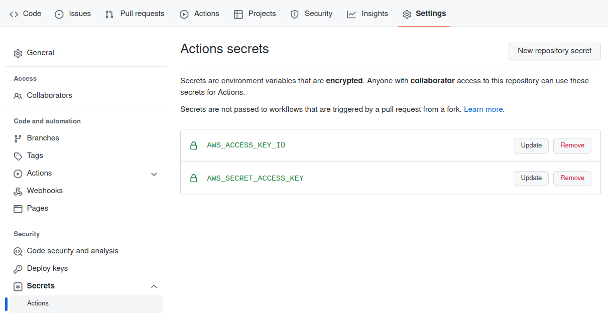
To create this user we execute the following command :
# create iam user + access key
$ make user-create
This command executes the user-create.sh script :
The 2 variables are output in 2 files at the root of the project
.env_AWS_ACCESS_KEY_ID.env_AWS_SECRET_ACCESS_KEY
Add these values to the secrets of your Github repository
Workflow testing
I’m going to create a feature branch named feature-one and make a CSS modification in it :
# make sure we ar on the master branch
$ git checkout master
# create + switch to the feature-one branch
$ git checkout -b feature-one
To modify our site we uncomment the following lines on the main.css file
/* uncomment below to create feature-one */
/*
color: black;
background-color: #eceff1;
border: #37474f 1px dashed;
padding: .7em;
*/
Changes can be seen at http://localhost:4000/ after running the following command :
# run vote website using npm - dev mode (livereload + nodemon)
$ make vote
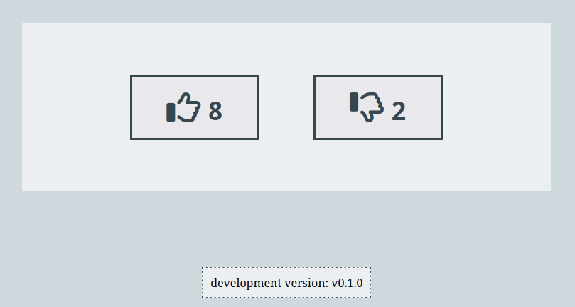
We push these modifications on Github :
$ git add vote
$ git commit -m 'css update'
$ git push -u origin feature-one
The workflow gets started :
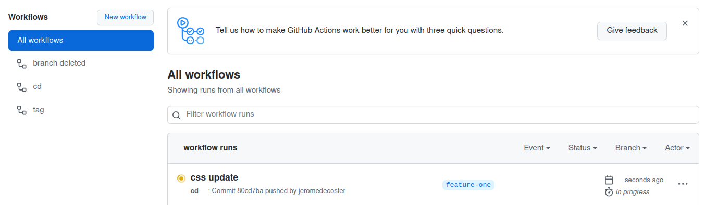
The workflow is quickly successful :
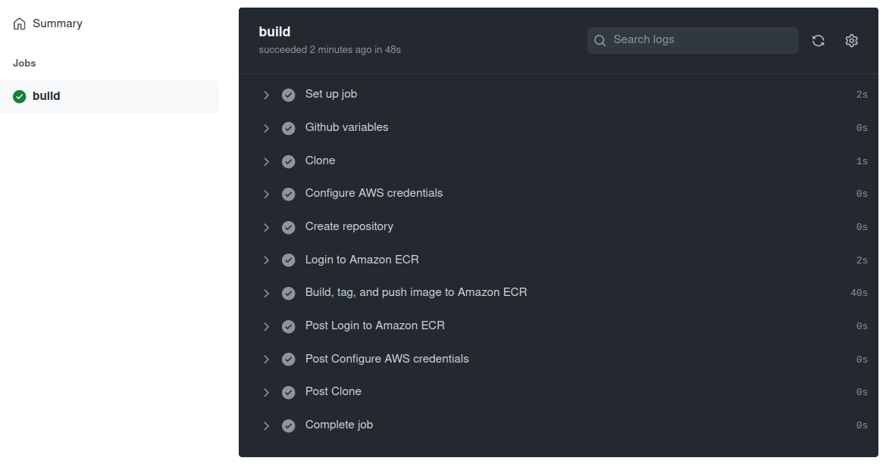
The repository was created automatically :
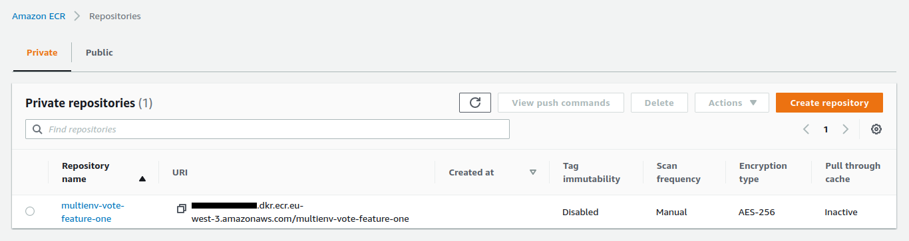
The image was successfully pushed :
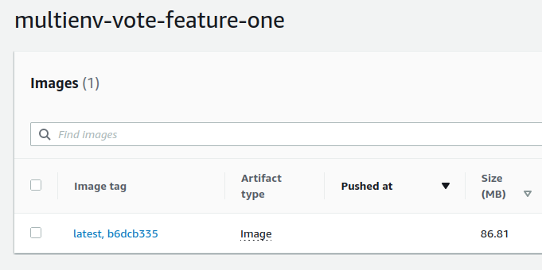
To locally test the image we just pushed to the ECR repository we run this command :
# run latest image pushed to ecr
$ make ecr-run
This command runs the ecr-run.sh script
It launches the website via a docker run which uses the last image pushed into a feature branch :
# get the first feature repository (so, everything except master branch)
REPOSITORY_NAME=$(aws ecr describe-repositories \
--query "repositories[?starts_with(repositoryName, '$PROJECT_NAME-')].[repositoryName]" \
--output text | \
head -n 1)
REPOSITORY_URI=$ACCOUNT_ID.dkr.ecr.$AWS_REGION.amazonaws.com/$REPOSITORY_NAME
docker run \
--rm \
-e WEBSITE_PORT=4000 \
-p 4000:4000 \
--name vote \
$REPOSITORY_URI:latest
By opening http://localhost:4000/ we have our website :
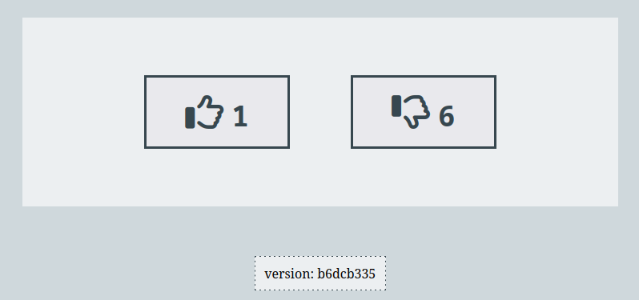
Note that the footer no longer indicates the same data
The footer is created using this template :
<footer>
{% if node_env == 'development' %}<u>development</u> {% endif %}version: {{ version }}
</footer>
These instructions :
FROM node:18.2-slim
ARG NODE_ENV
ENV NODE_ENV $NODE_ENV
ARG VERSION
ENV VERSION $VERSION
# ...
And these arguments :
run: |
docker image build \
--build-arg NODE_ENV=${{ github.ref_name }} \
--build-arg VERSION=${{ env.SHORT_SHA }} \
# ...
We are happy with these changes. We will merge this feature into the master branch, push them and create a new tag :
# switch to the master branch
$ git checkout master
# merge feature
$ git merge feature-one
$ git push
# create a tag
$ git tag v1.0.0
# push tag on github
$ git push --tags
The tag is added to the github repository :
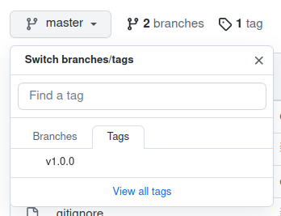
The tag workflow starts :
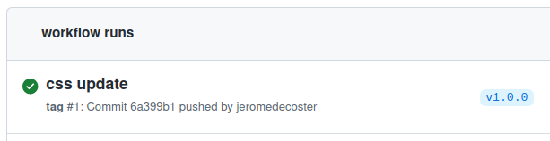
The ECR repository is created :
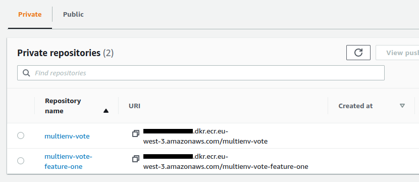
The image is pushed :
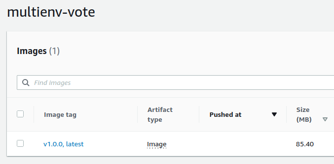
The tag name is v1.0.0
The infrastructure
The infrastructure is managed via a specific repository
Terraform is used to create the 2 EKS environments :
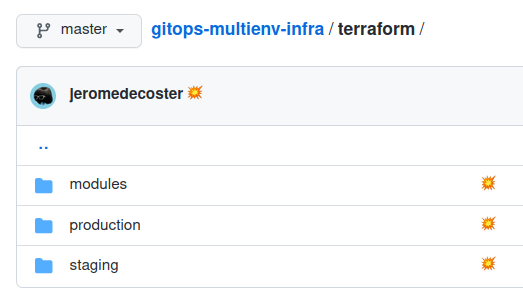
2 environments are available, via 2 separate folders :
Managing environments through directories instead of terraform workspaces is a good solution
We use a backend on S3 :
terraform {
backend "s3" {}
}
Which is defined via terraform init :
terraform -chdir="$CHDIR" init \
-input=false \
-backend=true \
-backend-config="bucket=$S3_BUCKET" \
-backend-config="key=$CONFIG_KEY" \
-backend-config="region=$AWS_REGION" \
-reconfigure
To create our S3 bucket we run the command :
# setup project + create S3 bucket
$ make init
This command creates the bucket with versioning enabled :
aws s3 mb s3://$S3_BUCKET --region $AWS_REGION
# /!\ important for terraform states : enable bucket versioning
aws s3api put-bucket-versioning \
--bucket $S3_BUCKET \
--versioning-configuration Status=Enabled \
--region $AWS_REGION
The bucket is created :
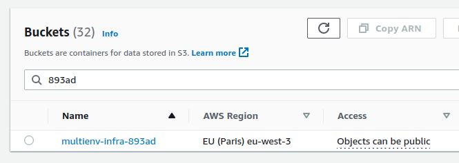
The script also creates 3 variables in 3 files at the root of the projects :
.env_AWS_ID.env_S3_BUCKET.env_UUID
Deployment of the staging environment
To deploy the environment we just need to run these 2 commands :
# terraform init the staging env
$ make staging-init
# terraform plan + apply the staging env
$ make staging-apply
The cluster is deployed :
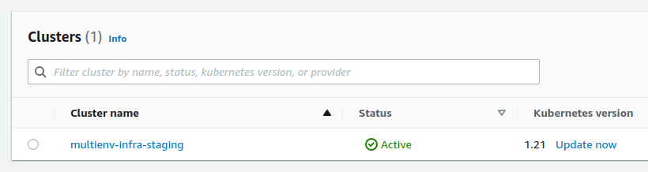
The tfstate is in the S3 bucket :
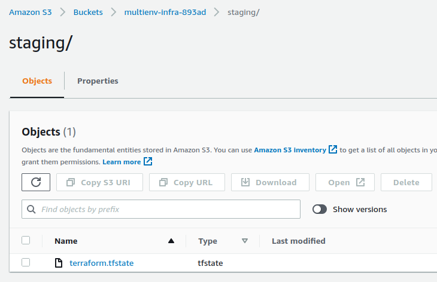
2 important steps are still missing at this precise moment :
kubectlhas not been configured to interact with the cluster- We don’t have the possibility to see the contents of the cluster. What this unpleasant warning confirms :
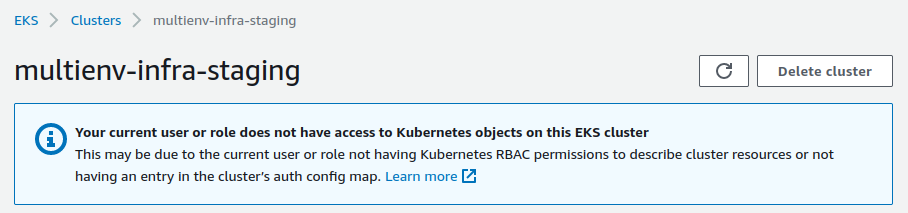
To correct these 2 points we execute the following command :
# setup kubectl config + aws-auth configmap for staging env
$ make eks-staging-config
We configure kubectl using the update-kubeconfig command from this script :
aws eks update-kubeconfig \
--name $NAME \
--region $REGION
Making resources visible is more complex. You must edit the aws-auth ConfigMap
Editing it manually is easier, we just need to do :
$ EDITOR=nano kubectl edit configmap aws-auth -n kube-system
And add the mapUsers section defined like this :
mapUsers: |
- userarn: arn:aws:iam::[account_id]:root
groups:
- system:masters
Automating this modification by a script is more complex. The script below uses jq and yq :
kubectl get configmap aws-auth \
--namespace kube-system \
--output yaml > "$PROJECT_DIR/aws-auth-configmap.yaml"
# convert to json
yq aws-auth-configmap.yaml -o json > "$PROJECT_DIR/aws-auth-configmap.json"
# add mapUsers (use jq instead yq to add mapUsers because it's MUCH simpler and MORE clean)
jq '.data += {"mapUsers": "- userarn: arn:aws:iam::'$AWS_ID':root\n groups:\n - system:masters\n"}' aws-auth-configmap.json \
| yq --prettyPrint > "$PROJECT_DIR/aws-auth-configmap.yaml"
# apply udated aws-auth-configmap.yaml
kubectl apply --filename aws-auth-configmap.yaml --namespace kube-system
Installing ArgoCD
To install ArgoCD we run this script :
# install argocd in staging env
$ make argo-install
Installing ArgoCD is done in a few command lines :
kubectl create namespace argocd
kubectl apply \
--namespace argocd \
--filename https://raw.githubusercontent.com/argoproj/argo-cd/stable/manifests/install.yaml
kubectl wait deploy argocd-server \
--timeout=180s \
--namespace argocd \
--for=condition=Available=True
kubectl patch svc argocd-server -n argocd -p '{"spec": {"type": "LoadBalancer"}}'
You can now connect to the ArgoCD web application with the data displayed in the Terminal :
Accept self-signed certificate :
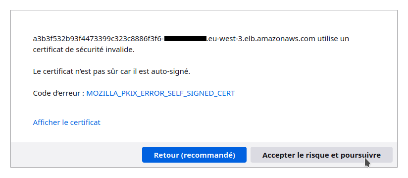
Then login :
Connect ArgoCD to Github repository
ArgoCD must have access to our github repository gitops-multienv-infra
There are chances are that this repository is private
It is therefore necessary to link the repository and ArgoCD using an SSH key
These operations are performed using the following command
The following command uses gh to automate adding the ssh key to Github. However, you can easily do it manually.
Important : the command uses the GIT_REPO variable which must be adjusted to your repository
# add git repo connection + create ssh key + add ssh key to github
$ make argo-add-repo
The script executes a few lines :
ssh-keygen -t ed25519 -N "" -f ~/.ssh/$PROJECT_NAME.pem
# ...
gh ssh-key add ~/.ssh/$PROJECT_NAME.pub --title $PROJECT_NAME
argocd repo add $GIT_REPO \
--insecure-ignore-host-key \
--ssh-private-key-path ~/.ssh/$PROJECT_NAME.pem
The repository is added :
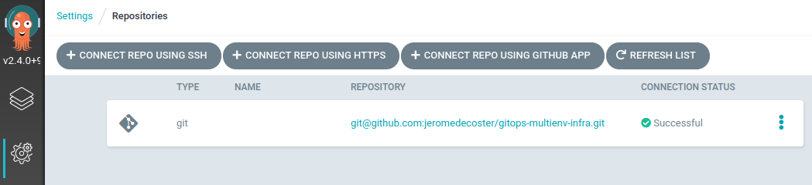
The public key is added to Github :
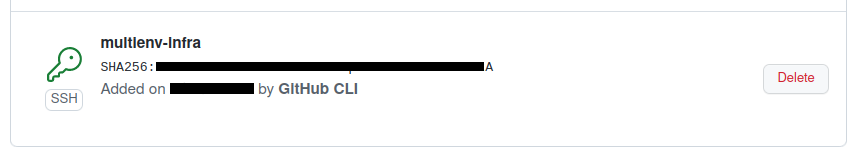
The ArgoCD staging application
The Kubernetes application is managed through the argocd folder
Deploying multiple environments using GitOps principles is not an easy and obvious practice
We use the method explained by Kostis Kapelonis in this excellent article
The application is defined using k8s manifests and a kustomization manifest within a base folder :
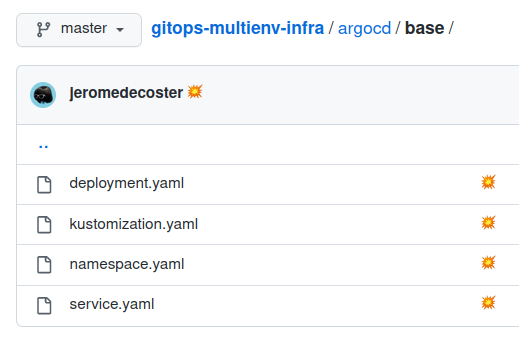
The customization of the environments is then done via 2 specific folders within an overlays folder :
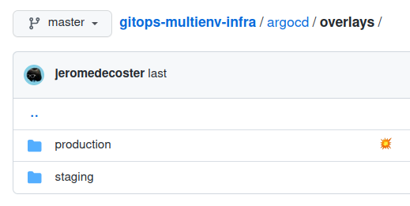
The ArgoCD application is generated from a template :
apiVersion: argoproj.io/v1alpha1
kind: Application
metadata:
name: app-${NAMESPACE}
namespace: argocd
spec:
project: default
source:
repoURL: ${GIT_REPO}
targetRevision: HEAD
path: argocd/overlays/${NAMESPACE}
destination:
server: ${SERVER}
namespace: gitops-multienv
The creation of the application is done in a few lines with envsubst :
export NAMESPACE=staging
export SERVER=https://kubernetes.default.svc
kubectl config use-context $PROJECT_NAME-staging
cat argocd/argocd-app.yaml | envsubst | kubectl apply -f -
The application deploys the image set via this patch :
Important: you must configure and push the correct docker image URI before installing the ArgoCD staging application
patches:
- target:
kind: Deployment
name: website
patch: |-
- op: replace
path: /spec/template/spec/containers/0/image
value: xxxxxx.dkr.ecr.eu-west-3.amazonaws.com/multienv-vote:v1.0.0
We execute the following command :
# create argocd staging app
$ make argo-staging-app
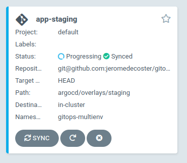
The application is successfully deployed :
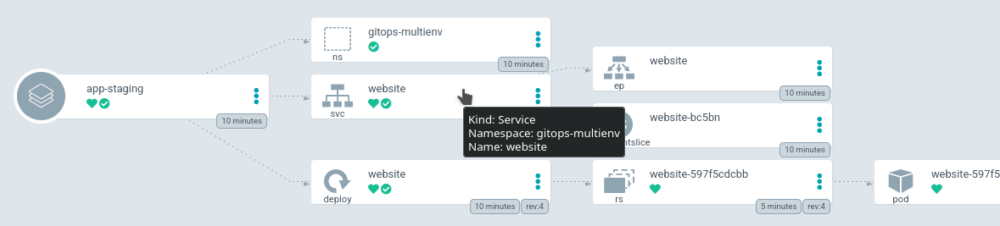
We get the load balancer URL :
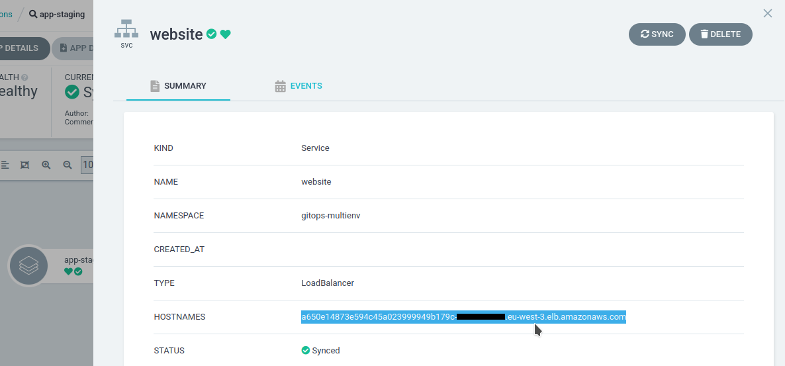
Setup the production EKS cluster
The deployment of the cluster is done via the commands :
# terraform init the production env
$ make production-init
# terraform plan + apply the production env
$ make production-apply
After a long wait, the cluster is deployed :
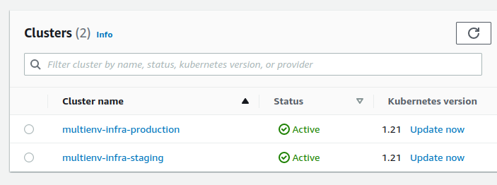
We configure the access to the cluster with this command :
# setup kubectl config + aws-auth configmap for production env
$ make eks-production-config
Connect ArgoCD to the new EKS cluster
We want a single ArgoCD application to manage our multiple clusters
We are therefore not going to install ArgoCD within the production cluster but connect this cluster to our ArgoCD application present within the staging cluster
We can see the list of clusters managed by argocd via this command :
$ argocd cluster list
SERVER NAME VERSION STATUS MESSAGE PROJECT
https://kubernetes.default.svc in-cluster 1.21+ Successful
This corresponds to this visual interface :
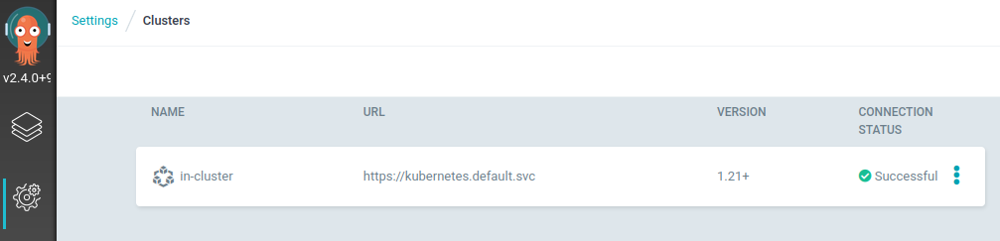
To add the cluster, it must be previously defined in kubectl. This has been done by the previous steps
You can check the list of clusters manageable by kubectl via this command :
$ kubectl config get-contexts
CURRENT NAME CLUSTER AUTHINFO
* multienv-infra-production arn:aws:eks:eu-west-3:xxxxx:cluster/multienv-infra-production arn:aws:eks:eu-west-3:xxxxx:cluster/multienv-infra-production
multienv-infra-staging arn:aws:eks:eu-west-3:xxxxx:cluster/multienv-infra-staging arn:aws:eks:eu-west-3:xxxxx:cluster/multienv-infra-staging
We associate a cluster with argocd with this simple command :
$ argocd cluster add --yes <cluster-context-name>
We execute this command :
# argocd add production cluster
$ make argo-add-cluster
The cluster is added :
$ argocd cluster list
SERVER NAME VERSION STATUS MESSAGE
https://xxxxx.gr7.eu-west-3.eks.amazonaws.com multienv-infra-production Unknown Cluster has no applications and is not being monitored.
https://kubernetes.default.svc in-cluster 1.21+ Successful
It can also be seen via the interface :
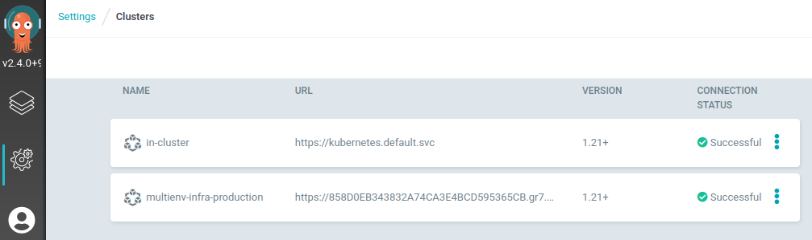
The ArgoCD production application
We deploy the production application using the following command :
# create argocd production app
$ make argo-production-app
The application deploys the image set via this patch :
Important : you must setup and push the correct docker image URI before install the ArgoCD production application
patches:
- target:
kind: Deployment
name: website
patch: |-
- op: replace
path: /spec/template/spec/containers/0/image
value: xxxxxx.dkr.ecr.eu-west-3.amazonaws.com/multienv-vote:v1.0.0
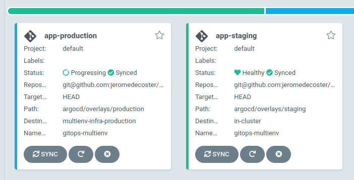
Faster synchronization of ArgoCD applications
ArgoCD checkd for git repository update every 3 minutes
You can use the Github webhook to sync it after each push
But if it doesn’t work, we can also use the sync by the cli app
We need to generate an ArgoCD token
At the moment we don’t have any :
$ argocd account get --account admin
Name: admin
Enabled: true
Capabilities: login
Tokens:
NONE
We get an error if we try to generate one :
$ argocd account generate-token
FATA[0000] rpc error: code = Unknown desc = account 'admin' does not have apiKey capability
We need to edit the argocd-cm ConfigMap :
$ EDITOR=nano kubectl edit configmap argocd-cm -n argocd --context multienv-infra-staging
Before :
apiVersion: v1
kind: ConfigMap
metadata:
annotations:
# ...
After :
apiVersion: v1
kind: ConfigMap
data:
accounts.admin: apiKey
metadata:
annotations:
# ...
Then generate the token again :
$ argocd account generate-token
eyJhb...
Let’s check the data returned for the admin account :
$ argocd account get --account admin
Name: admin
Enabled: true
Capabilities: login, apiKey
Tokens:
ID ISSUED AT EXPIRING AT
xxxxxxxx-3f07-44b7-a9d4-40972f273484 2022-02-20T00:00:00+02:00 never
We get the address of the ArgoCD server with this command :
# argocd cli login + show access data
$ make argo-login
SERVER xxxxx-xxxxx.eu-west-3.elb.amazonaws.com
We add the token and the ArgoCD server URL as Github secrets :
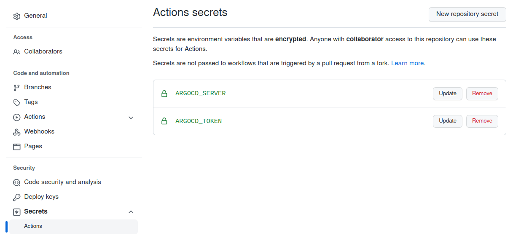
The cd.yml workflow is used to synchronize our 2 applications :
- name: Install argocd and run `app sync`
run: |
curl -sSL -o /usr/local/bin/argocd https://github.com/argoproj/argo-cd/releases/latest/download/argocd-linux-amd64
chmod +x /usr/local/bin/argocd
argocd app get app-staging \
--auth-token ${{ secrets.ARGOCD_TOKEN }} \
--server ${{ secrets.ARGOCD_SERVER }} \
--insecure \
--grpc-web \
--refresh >/dev/null
argocd app wait app-staging \
--auth-token ${{ secrets.ARGOCD_TOKEN }} \
--server ${{ secrets.ARGOCD_SERVER }} \
--insecure \
--grpc-web \
--sync \
--health
# ...
Let’s deploy a new feature in staging
We create a new branch in our multienv-vote project :
$ git checkout -b feature-two
We modify the css again :
footer {
/* ... */
color: grey;
background-color: #eceff1;
border: grey 1px solid;
padding: .7em;
}
Our local server gives this at address http://localhost:4000/ :
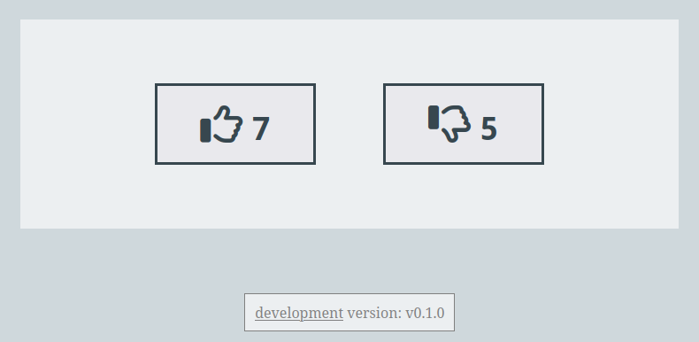
We push this branch on github :
$ git add .
$ git commit -m 'css again'
$ git push --set-upstream origin feature-two
The repository is added :
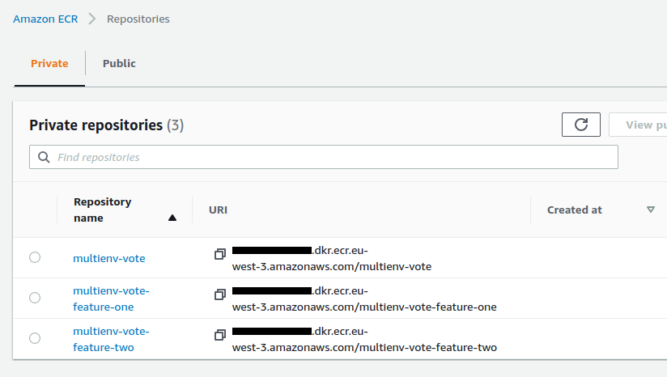
We get the URI of the docker image :
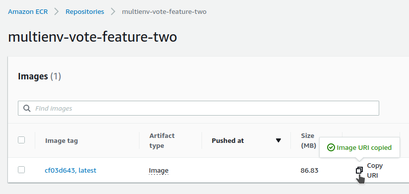
We modify our kustomization.yaml file of the staging environment :
patches:
- target:
kind: Deployment
name: website
patch: |-
- op: replace
path: /spec/template/spec/containers/0/image
value: xxxxx.dkr.ecr.eu-west-3.amazonaws.com/multienv-vote-feature-two:cf03d643
We push this modification :
$ git add .
$ git commit -m feature-two
$ git push
The workflow is activated :
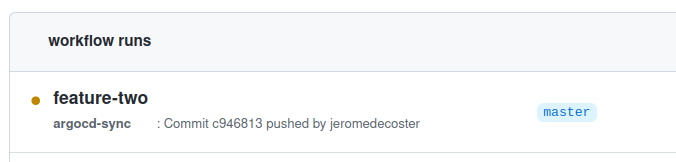
The update of the 2 applications took 11 seconds :
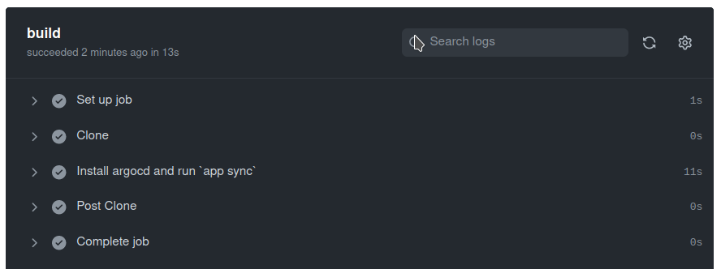
By reloading my browser at the staging URL :
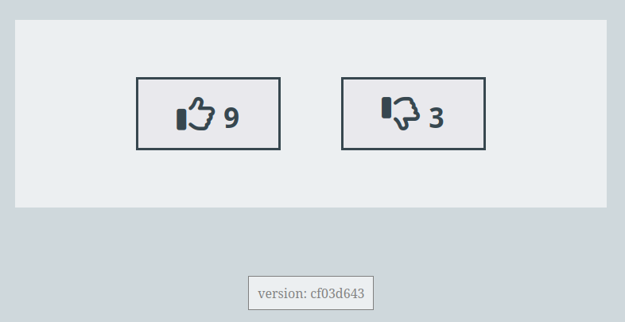
This demonstration is over, it is important to remove all resources :
# delete argocd apps then argocd
$ make argo-destroy
# terraform destroy the production env
$ make production-destroy
# terraform destroy the staging env
$ make staging-destroy